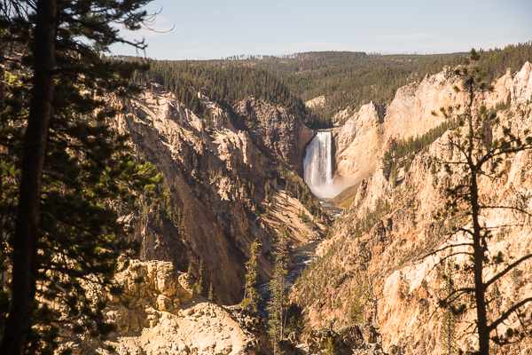
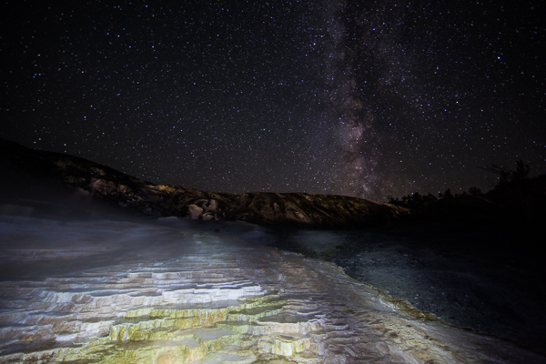
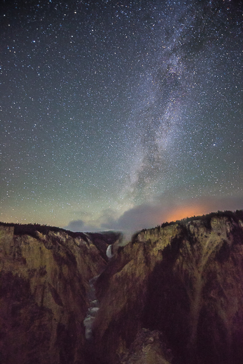
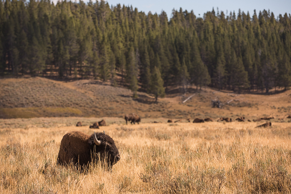
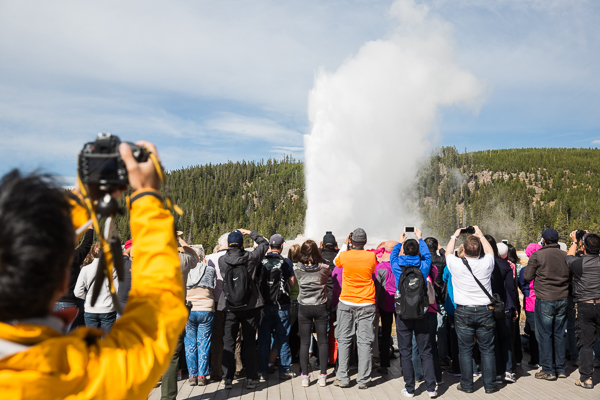
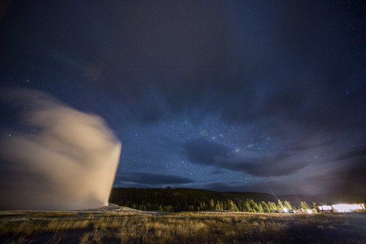
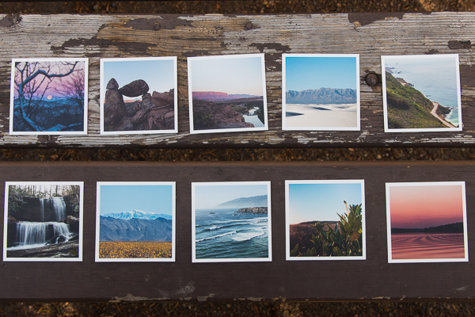
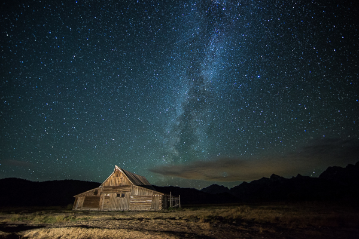
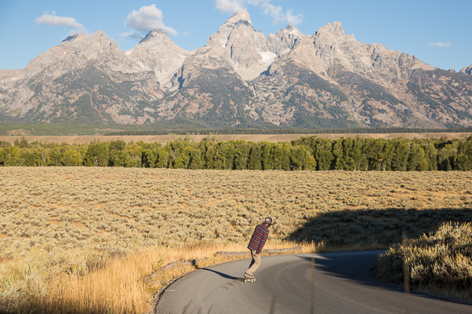
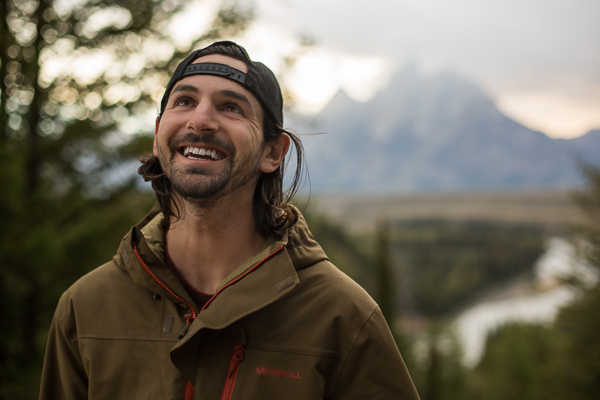

We’ve been tested physically and mentally all year. One thing that’s constantly being tested is our patience. We do our very best to be patient with red lights, each other, and even people who say nasty things to us on the Internet. But one thing we’ve been growing tired of being patient for is visiting Yellowstone National Park.

That’s right, America’s first national park has been high on our to-do list for quite some time and we finally got the chance to check it out. Since we still have a bunch of states to see in the remaining months of 2016, we didn’t have a lot of time to spend in Wyoming, let alone the upper left corner that Yellowstone resides. Although we would rather do a few days in the backcountry, we decided that we could use our time more wisely and check out a broad range of sites in the park before making our way down into the Tetons.

We rolled into Yellowstone after a beautiful Montana sunset sent us into Wyoming. We’d done a little research beforehand of places we wanted to check out in the park, but as you can imagine, it was a little tough sight-seeing our first spot in the dark. We walked the boardwalks around Mammoth Hot Springs by ourselves, trying to put the Milky Way behind the springs for a long exposure. Apparently we were the only ones who wanted to brave the cold night air, and risk slipping on the frost-covered boardwalk.

After we’d gotten our fill of sulfur water, we wanted to set ourselves up for a sunrise from Artist’s Point. When we reached the parking lot, I decided to give it a look. Although it was dark and quite hazy, I set up my camera for another long exposure and ended up getting an interesting glimpse of Lower Falls with the Milky Way and a wildfire sitting on top of it.

The next morning we felt pretty groggy after driving and shooting most of the previous day. We made our way to Old Faithful, stopping only for a heard of bison, breakfast on Yellowstone Lake, and a quick stamp in our National Parks Passports at the visitor center.

We learned that Old Faithful, the most predictable geyser on Earth, was on a 90 minute schedule. We arrived just in time to see the mass chaos of people fighting for a good view of the show. It made me wonder, if nobody is around to see Old Faithful go off, does she still put on a show?

The answer is yes. That night we made sure she wasn’t watching us as we set up our tripods in the dark and attempted to get another Milky Way shot (the clouds had other plans) as she tried to show off to the Old Faithful Inn’s sleeping inhabitants.

By the following day we were absolutely exhausted. We’d spent the previous 2 nights driving and setting our alarms for absurd times of night in order to get night photos with stars in the right place. We spent most of the day driving into Grand Tetons National Park and hanging out on top of Signal Mountain, relaxing, returning emails, and making phone calls. Oh, and we put up some prints for sale in our online store! You can check those out here.
That afternoon, we devised a plan to take more night photos at 11pm with the Milky Way behind the Teton mountain range. But despite our perfect planning, patience, and a 10:30 alarm, we didn’t get what we were hoping for. Damn clouds…but we were determined not to be shut down!

Earlier that day, we realized that the famous Moulton Barn on Mormon Row faces northeast and would be a perfect foreground for the Milky Way as it crossed southwest at about 1am. We scrambled around in the dark trying to find the right road that would lead us to what we hoped would be the perfect setting. We arrived right around 1am and we weren’t the only ones with the bright idea. We met a few students of a professional photography workshop as they shot what turned out to be an incredibly composed landscape. The wind had cleared out the clouds and the Milky Way was exactly where we thought it’d be! And to top it all off, our new friends from all over the country brought an LED floodlight that lit up the barn just perfectly. The stars had, literally and figuratively, aligned in our favor.

We awoke the following morning with just a few hours of sleep under our belts and our tripods in our arms as we carried ourselves back to the barn at sunrise. We set up with a dozen other camera wielders and watched the sun wash the shadows off of the Tetons and Moulton Barn. As beautiful as it was, it didn’t light a candle compared to what we’d experienced at the same exact spot just hours before. There’s something to be said for a little preparation and patience I suppose.

Our final day in Wyoming was a bit of a blur. Maybe we were delirious from lack of sleep and odd operating hours. Maybe we were just still drunk from the amount of stars we’d seen the past few nights. Whatever it was, there was no way to wipe the grins off our faces.